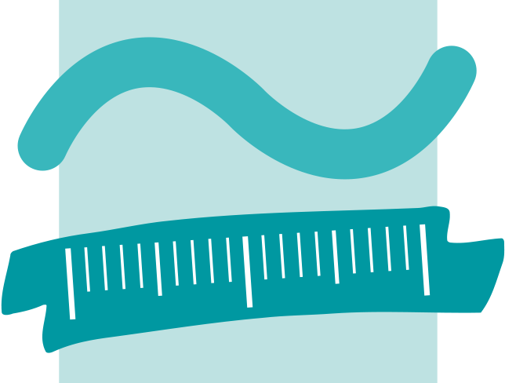

BlCodeScraper
Tool zum Finden und Einlösen von SHIFT-Codes für die Borderlands Spiele
Umgesetzt mit
Projekt von Brice Dorsey und Marc Störmer
Die korrekt gerenderte Version dieser Präsentation ist auf GitHub Pages zu finden.
Komponenten
- Web scraper (Java) -
Marc
- API (Java Spring) -
Brice
- Datenbank (MySQL) -
Brice
- Plattformunabhängiger Client (Electron) -
Marc
Ursprüngliche Ziele
- Scrapen aller aktuellen Codes (alle Spiele / alle Plattformen)
- Einfaches Einlösen der Codes auf SHIFT
- Übersichtlicher Client
- Scalierbarkeit für eventuelle neue Spiele/Plattformen
- Simple Client-Authentifizierung
- Schnelles scrapen/anzeigen der Codes im Client
Web scraper
- http://orcz.com sammelt SHIFT-Codes in Tabellenform
- Lizenz: Creative Commons Attribution Non-Commercial Share Alike
-
Java Web scraper:
1x pro Tag Auslesen der Codes - Sortieren, Filtern und Persistieren der Codes
Web scraper : Quellen
Alle genutzten Tabellen
- Borderlands (1): http://orcz.com/Borderlands:_Golden_Key
- Borderlands Pre Sequel: http://orcz.com/Borderlands_Pre-Sequel:_Shift_Codes
- Borderlands 2: http://orcz.com/Borderlands_2:_Golden_Key
- Borderlands 3: http://orcz.com/Borderlands_3:_Shift_Codes
Daten von orcz.com bereitgestellt unter der Lizenz:
Creative Commons Attribution Non-Commercial Share Alike
API

- Für Entwicklung von der Rest-API
- PostMan für die erste Tests
- Lombock
- SHIFT-Codes in Json-format
Datenbank

- MySQL für die Datenpersistenz
- Gescrapte codes werden in der Datenbank gespeichert
- Users mit den credentials werden in einer Tabelle angelegt
- Zu jedem user werden auch schon verwendete codes persistiert

- Schon gescrapte Games werden in einer Tabelle persistiert
- Dies vermeidet eine Tabelle mehrmals zu scrapen, wenn diese schon in der Datenbank persistiert wurde
- Die SHIFT-Codes werden immer erst nach 24 Stunden neu gescraped, um nicht zu viele Anfragen an die Webseiten zu stellen
Electron Client
HTML / CSS / JS
Anmelden bei SHIFT
- Nutzer wird aufgefordert sein SHIFT-Konto zu verbinden
- Der Client verwendet dafür die libary @shift-code/api von Tyler Stewart
- SHIFT ist der Service von gearbox software, der sich um die Ingame-Belohnungen der Borderlandsspiele kümmert.
Client bei API authentifizieren
Auth ohne Login?
- Nutzer soll keinen Account bei uns erstellen,
da er schon seinem SHIFT-Account angeben muss.
(Nur Clientseitig) - Client erstellt automatisch einen Key
- Key wird der API gemeldet und nachfolgend als Auth verwendet.
Beispiel-Key:
e025db40-e43a-435e-9498-cf4455830fe086f47b3a-7dbf-4809-a0b2-473c5c383351
df2a6072-f42f-403b-80ca-726858d8e66d2e6c8299-c381-4739-aed0-7f52ded7e2cc
Codes abfragen
Funktionen auf dieser Oberfläche
- Anzeigen der Codes nach Spiel und Platform
- Eingelöste Codes anzeigen (unsere API)
- Code als Eingelöst markieren (unsere API)
- Code in die Zwischenablage kopieren
- Code auf SHIFT einlösen
- SHIFT-Login triggern
(ändern oder einloggen)
Eingelöste Codes anzeigen
Funktionen auf dieser Oberfläche
- Anzeigen aller eingelösten Codes (unsere API)
- Kopieren eines Codes in die Zwischenablage
- Code aus der Liste der eingelösten Codes entfernen (unsere API)
Nicht umgesetzte Funktionen
- Code als HTML-Page teilen: War nur eine komplizierte Art des Kopierens
- Speichern des SHIFT-Accounts: Datensicherheit - besser nichts im Klartext speichern
- Manuelles Hinzufügen von Codes durch Admins: Wir können nun unabhängig von der API eigene Tabellen erstellen und diese scrapen lassen
Zukunftsaussichten
- Mehrere Quellen als Absicherung und zur größtmöglichen Abdeckung aller Codes
- Meldung nicht funktionierender Codes
- Web view
- Hosting (möglicherweise wird der Code der API zu Python geportet)
- Discord Bot (Verknüpfung mit Discord-User-Ids)
Gelernt
- Seit dem ersten Semesters des Bachelors nicht mehr mit Java zu arbeiten, war ein Problem :D
- Pair programming hilft! (Auch morgens um 2 Uhr)
- Authentifizierungsmöglichkeiten
- Hosting auf Heroku (Buildpacks)
- Speicherung von sensiblen Daten vermeiden - wie?
- Client - API-Kommunikation
- Arbeiten mit MySQL in Java
- Web scraping (Möglichkeiten / Grenzen / Probleme)
DEMO
Beuth Hochschule für Technik Berlin
Modul:
Enterprise Web Development (WiSe 2020/2021)Die korrekt gerenderte Version dieser Präsentation ist auf GitHub Pages zu finden.